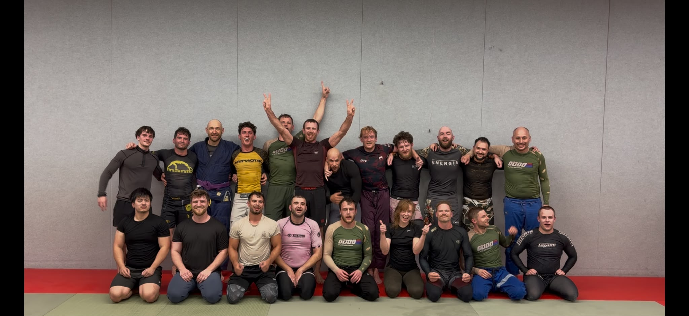

DODO Jiu Jitsu, geleid door Mathijs, Thijmen en Danny, draait niet alleen om discipline, hard werken en respect, maar ook om emotionele groei en om plezier hebben.
Bij DODO houden we ons niet vast aan traditionele, heldenvererende hiërarchieën; op de mat zijn we allemaal gelijk, ongeacht band, niveau of rol. We eisen ook niet dat je onze vlag zwaait met DODO-vechtkleding of Gi-patches. Nee, dat soort triviale zaken interesseren ons niet; wij geven om jouw ontwikkeling en veiligheid. We zijn toegewijd aan het helpen bereiken van jouw volledige potentieel door onze kennis en ervaring te delen, zowel in Gi als in No-Gi.